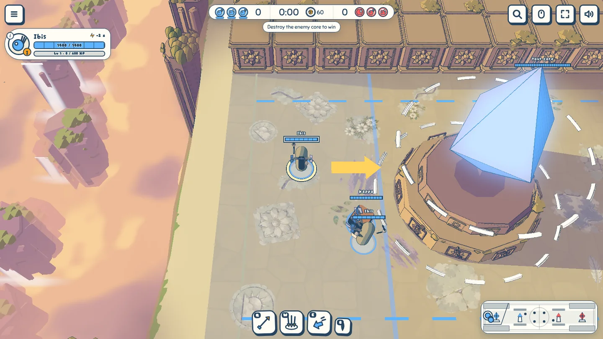
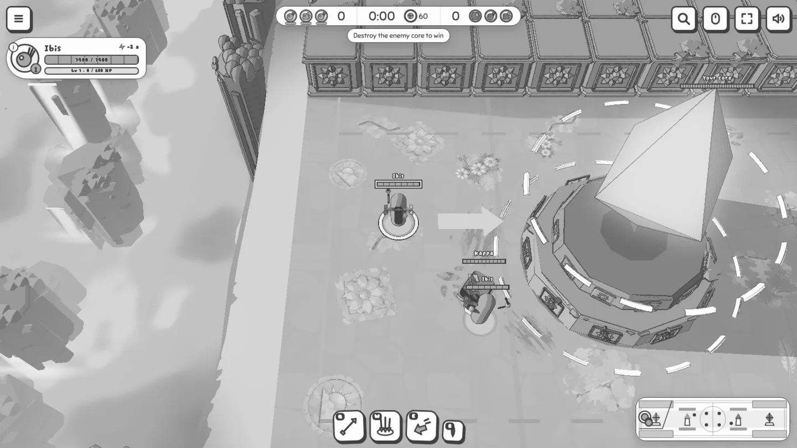
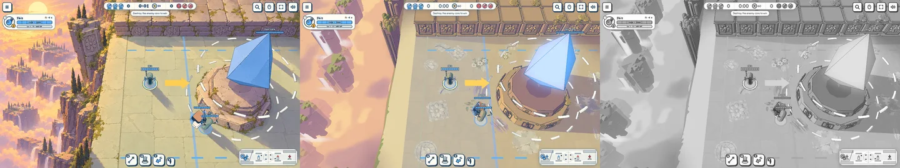
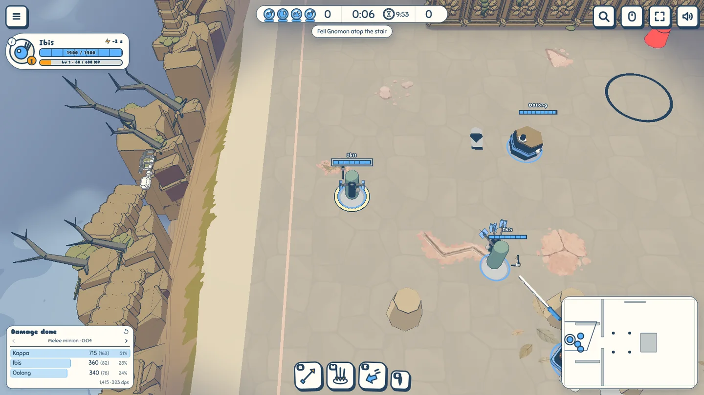
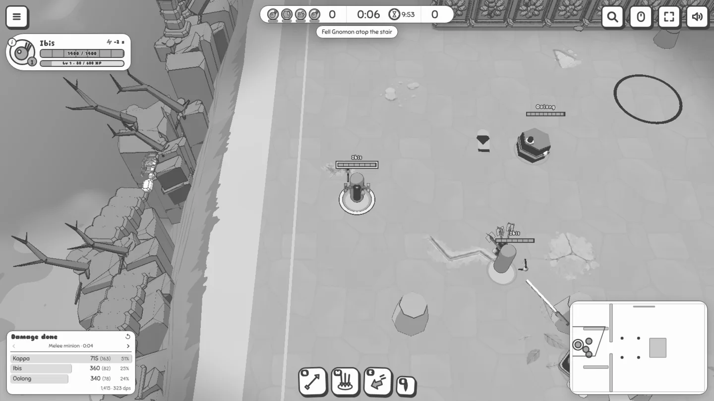
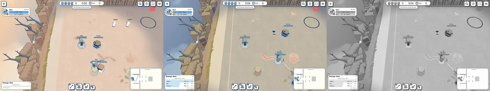
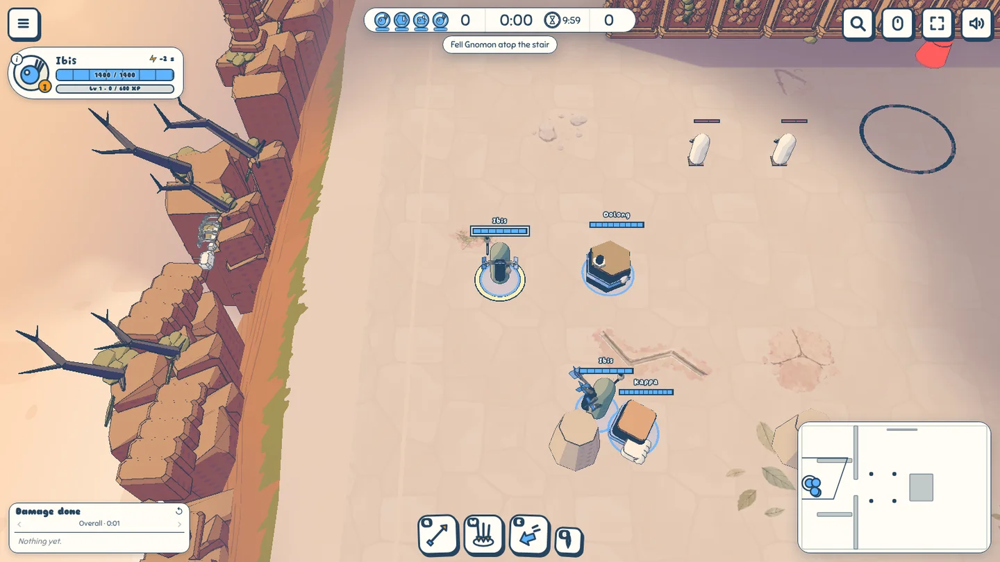
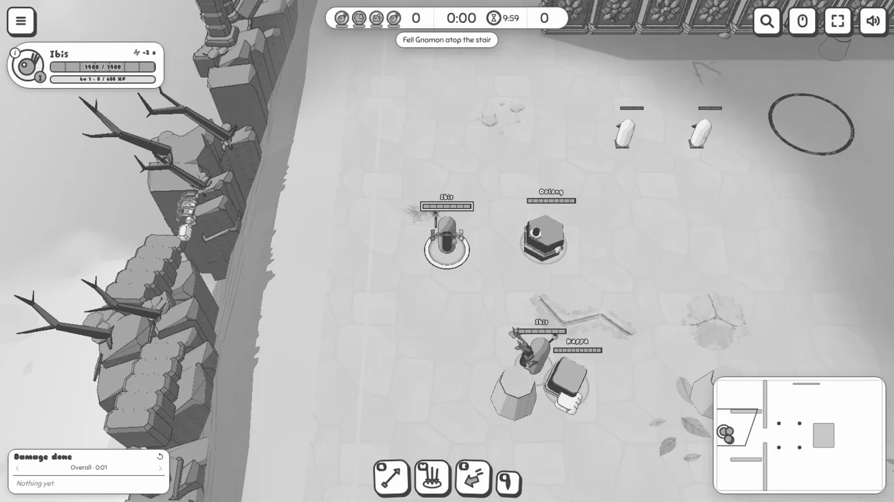
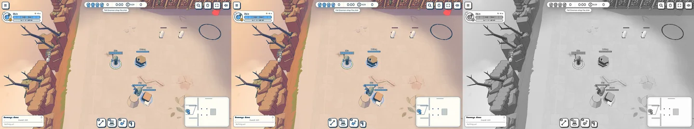

Dusk and high noon
To review · 2026-10-25 · thr_wrz2sknwdm
Overthrow has a low western sun, warm flags and violet shadows above peach cloud. Altamesa stands under a blue noon sky, with deeper shade and shorter shadows. Its rim keeps the same moss patches with less mesh detail: 276,796 triangles at dawn, down from 322,876. Each view has a grey study and a comparison; dusk is compared with the golden target, Altamesa with the previous build.








